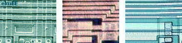
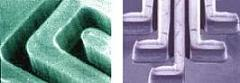
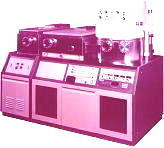

Metallization
Metallization
refers to the metal layers that electrically interconnect the
various device structures fabricated on the silicon substrate.
Thin-film aluminum is the most widely used material for metallization,
and is said to be the third major ingredient for IC fabrication, with
the other two being silicon and SiO2.
Al is very suitable for this
purpose with its very low resistivity and its adhesion compatibility
with SiO2. A disadvantage of Al as the metallization material is
its low melting temperature (660 deg C) and the low Al-Si eutectic
temperature (577 deg C). These restrict the maximum processing
temperature once the Al layer has been deposited.

Fig.
1.
Aluminum Metal
Lines as seen under a SEM (left), a low-power
microscope
(middle), and a high-power microscope (right)
Actually,
aluminum alloys (lightly doped Al) such as Al-Cu are preferred to pure
aluminum for metallization because these inhibit problems like
electromigration and junction spiking.
Al metal layers are usually deposited through Physical Vapor
Deposition (PVD) by sputtering. Sputtering may be described as a
series of four steps: 1) high-energy ions are generated and are used to
bombard a target (the source of material for deposition); 2) the ions
sputter (eject) atoms from the target; 3) the sputtered atoms reach the
substrate; and 4) the sputtered atoms condense and form a thin film over
the substrate.

Fig.
2. Metal lines after deposition
Upon exposure
to oxygen, aluminum readily forms a native thin oxide on its surface
(Al2O3), even at ambient temperature. The presence of such an
oxide layer can increase the contact resistance of the Al layer.
It can also inhibit the sputtering of an Al target or etching of an Al
thin film, resulting in processing difficulties.
Al can also
easily suffer from corrosion. All it takes is the presence of a
corrosive contaminant and moisture. For instance, if
phosphorus-doped silicon dioxide is deposited over Al lines, phosphoric
acid can result if moisture ingress through the glass occurs. The
acid will lead to corrosion of the Al lines.
|
 |
|
Fig.
3. Example of a Sputter Deposition System
that can be
used for depositing Al metal lines
|
Wafer Fab
Links:
Incoming
Wafers;
Epitaxy;
Diffusion;
Ion
Implant;
Polysilicon;
Dielectric;
Lithography/Etch;
Thin
Films;
Metallization;
Glassivation;
Probe/Trim
See Also:
Properties of Various Metallizations;
IC
Manufacturing; Wafer Fab Equipment
HOME
Copyright
©
2001-2006
www.EESemi.com.
All Rights Reserved.